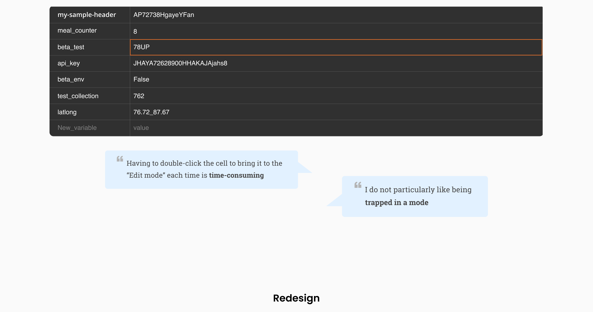

Designed the core component used to work with data in Postman
A story about taking a step back and noticing the invisible problem by asking the right questions, experimenting, and winning.
Problem
Working with large amounts of data in Postman was cumbersome and time consuming
Postman is the collaboration platform for API development used by 10 million+ developers across the world. The component that was being used to view and manipulate data in Postman had usability issues, especially when working with large amounts of data. Furthermore, the component wasn't designed with extensibility in mind. Thus, it was hard to add advanced data manipulation features on the existing component.
Here were some of the problems with the old Postman's Data Editor component:
Responsibilities
My role
I was the sole designer on this project, and worked in close collaboration with one developer.
Identifying the right problem to solve
Understanding the product and the underlying needs of the users
Ideation, wireframing, high fidelity mocks: creating high-fidelity mocks and prototypes for the final solution
Working closely with engineers to ensure high-quality implementation
Consolidating user feedback received via various channels (Slack, Twitter, Github etc.), and using it to push further improvements to the feature
Feature marketing: Wrote documentation and a blog post on the Postman blog
Solution
Introducing the New Data Editor
This new editor is an enhancement to the key-value editor and lets you view and manipulate data in a faster, more effective and elegant manner. I wrote a blog post on the Postman blog highlighting all the usability improvements.
View more data at a glance in a cleaner interface
We’ve configured the available horizontal and vertical space more effectively to optimize the data that can be displayed up front. Relevant actions (delete, move) will display for a specific row on hover. This reduces clutter in the interface and helps you focus on the most relevant data.
Ability to resize columns
If one column needs more horizontal area as compared to another, you can resize the columns.
Get a complete view of the information you want to see
We display the information you want to see up front. If you navigate to a place with a large amount of data, the UI element auto expands to show the complete information. We also implemented this capability in the URL bar to show the complete URL.
Keyboard shortcuts to supercharge your workflows
Support for bulk actions
You can now reuse data by copying multiple rows at once and pasting it at another location.
Customizable views
You can choose to show or hide columns based on your workflow. These customizations will persist across app sessions.
Ability to upload files as values
One editor, multiple flavours
Here are all the places where the data editor component is being used in the Postman app. While the base component remains the same at all places, there are different flavours based on the needs of different places.
The process
Problem identification
The most interesting part about this project is that I wasn’t given a project brief to redesign the data editor component. The problems with the existing data editor component got identified while I was working on a project around “variables in Postman” which used the data editor component.
I listed down the user tasks for the variables project and started designing for these tasks. This required studying the underlying data editing component and understanding how it can be extended to support these tasks.
I was adding more elements to the existing data editor component which added to the visual clutter. Simultaneously, I was also familiarizing myself with Postman as a "non developer", which made me see an opportunity to make the data editor more usable. After a few initial explorations, I took a step back to rethink our data editor component with the goal of making it more usable, powerful and extensible.
And this is how the story of the data editor redesign began...
Understand | The 'Why'
Problem
Working on the variables project surfaced the following problems with the data editor:
Usability: Long values get cropped and needs a horizontal scroll to see the complete value - not user friendly
Extensibility: The data editor was not designed with extensibility in mind. Adding each new functionality to the editor - for example, adding variable scope, variable type, variable description - was making the editor visually overwhleming.
Understand | The 'Who'
Understanding the users and their workflows
My goal was to understand the challenges that Postman users faced with the data editor and the workarounds they employed. Talking to my developer peers at Postman (who used Postman), and interacting with Postman users through github, twitter and zendesk helped me understand their likes and dislikes.
Postman power users like Kim also used the "Bulk-edit" feature to work with large amounts of data quickly. The "Bulk edit" mode in Postman is a "text editor" view for data in the data editor, and it supports quick data manipulation using keyboard based workflows and bulk actions.
The discovery
The 'Key-Value Edit mode' and the 'Bulk-Edit mode' had its own sets of benefits. Users either preferred one over the other, or kept switching between them.
The "Bulk-edit" mode in Postman was built to support expert users. We noticed, however, that the "Key-Value edit" mode and the "Bulk-edit" mode provided different benefits. Thus, if an expert user decided to only use the "Bulk-edit" mode, she would not have the nice visual structure that the "Key-value edit" mode provides. Constantly switching between the two modes was time-consuming.
This begged the question, now that we are rethinking about our data editor, can we combine the benefits of both modes into one? We decided to experiment and take on this challenge too. Here's when this project got ambitious and exciting.
Reframing the problem
Postman's data editor had usability issues, lacked features for power users, and wasn't designed with extensibility in mind.
This redefined problem surfaced the following questions and helped define these goals:
Solving for each goal
Comparative analysis | Inspiration from other data editing patterns
To solve for each of the goals listed above, I studied various data editing softwares. First step was to look at other developer products like VS Code, Sublime text, Android Studio and Xcode. Since these were text editors, they provided a free-formed canvas without any visual structure, quite similar to the "Bulk-edit" mode in Postman.
However, we wanted this editor's interface to be intuitive and easy to use, much like the "Key-Value edit" mode in Postman which did not require knowing any syntax. This prompted us to study widely used data editing softwares which provided a familiar, intuitive interface along with powerful data manipulation features.
Solving
Constraint: Transitioning smoothly to the new design
Postman's older data editor was the core component of the app being used by 5 million+ users. This editor had become a part of the muscle memory for all the Postman users, so it was paramount to take careful design decisions to avoid disrupting existing flows. Documenting core workflow changes, and communicating the change effectively to the users was a crucial task here. Thus, for a first version, we tried keeping the precedent functionality intact, while making the editor more powerful and usable.
Initial exploration: Borrowing interactions from spreadsheets
Our initial approach was to borrow (almost all) the interactions we found from our comparative analysis and create a spreadsheet like framework for the data editor. I created the initial designs and laid down the interactions. These interactions were inspired from our comparative analysis of spreadsheets:
Better utilise real estate: Ability to resize columns
Support bulk operations: Bulk operations like bulk cut, copy, paste
Variable descriptions: Show/hide columns to make room for data that is important
Interaction different from spreadsheets: Fast navigation | To edit, or not to edit?
Postman power users liked the "Bulk-edit mode" since it offered a free canvas for text editing using keyboard arrow keys. In bulk edit, the user can work with data freely i.e. there are no "modes". However, in many spreadsheets, there are two modes - a view mode and an edit mode. By default, each cell is in a "view mode" and double clicking would show the cursor in it.
My first instinct was to follow the spreadsheet approach of having a "View" and "Edit" mode for a cell. I created an initial design, and took feedback from power users on this particular interaction. Users leaned towards having the "Dropbox paper tables" like interaction, where each cell is always in "Edit" mode.

Interaction different from spreadsheets: Handling overflows gracefully
Though most of the data manipulation features were inspired from spreadsheets, there was one interaction that required deeper thought - handle overflows gracefully i.e. how to show large values in a cell? For each interaction we were borrowing from the spreadsheet model, we deeply thought about how it would fit into our context. Doing this exercise proved especially useful for this particular goal.
If there is a large amount of data in a cell, spreadsheets provide 3 text wrap options: overflow, wrap, clip. However, none of the three approaches worked for us. Overflow wouldn't work since we did not have any horizontal space after the value column. Wrap, at first, sounded like a good option because it satisfies our design principle of "Show the data". However, in Postman, values can be extremely large. This would result in hiding all the rows below it, which wasn't a great option.
I went back to the first principles and asked myself, if we cannot ALWAYS show the data, how can we know when the user wants to see the complete value? The answer was simple - when the user is in that cell. This led us to a middle ground.
Execution
From an idea to realisation
Since this was a redesign of the data editor with a considerably different UX, we decided to first build out a MVP prototype. The aim was to dog food this new editor within the company to really be sure that this design is intuitive and usable, and improve the editor based on feedback.
I created an internal design document for the feature on Atlassian and paired with a developer to build out a prototype. I learned the value of embracing developmental constraints and designing the best possible solution (with low effort and high impact). Every day, we used to play with the prototype, share it with other people in the company, take their feedback and make improvements. Slowly, day by day, the prototype started to become more mature, real and gave good feels. Our hypothesis was getting strengthened. Finally, in a short span of 3 months, after releasing a small beta and rigorous user testing, both within and outside the company, we launched this new editor to production.
Core learnings
My learnings from this project
Working on Postman’s Data Editor has been an immense learning experience for me. I understood the iterative nature of design. Sometimes it can take several iterations to reach a design which finally 'works'. Creating, sharing with team members, receiving feedback and iterating is the key. There's ALWAYS scope for improvement. The feedback we received on Github, Zendesk, Slack etc. from real users, helped us push improvements to the editor in subsequent app versions. I realised the importance of shipping fast and iterating quickly. Most importantly, while working on a product with such a large user base, I learned the importance of transitioning smoothly from an old to a new version. The older key-value editor had become a part of the muscle memory for all the Postman users, so it was paramount to take careful design decisions to avoid disrupting existing flows. Documenting core workflow changes, and communicating the change effectively to the users was a crucial task here. Thus, for a first version, we tried keeping the precedent functionality intact, while making the editor more powerful and usable.
Designing a developer product required me to understand how developers work. For example, developers love keyboard shortcuts, so this was an important consideration for me while designing product features. Routinely interacting with developers over different community channels helped me understand their likes and dislikes.
The impact
Understanding the impact
The Data Editor has now become a core component of Postman and is being used by more than 10 million developers worldwide which fills me with happiness and satisfaction. Every time I see a user attach a screenshot of the Data Editor on GitHub to provide feedback, I zoom in to understand how they’re using it. The editor has also been extended to support ANY kind of data manipulation (and not just key value pairs), and is now being extended to support editing nested data (for example, JSON) amongst many other things.